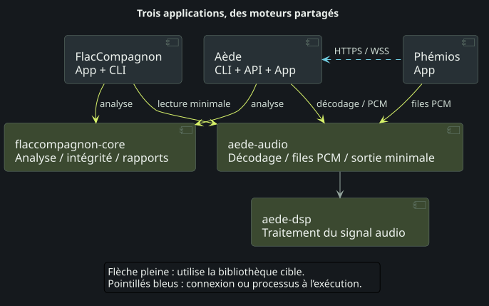
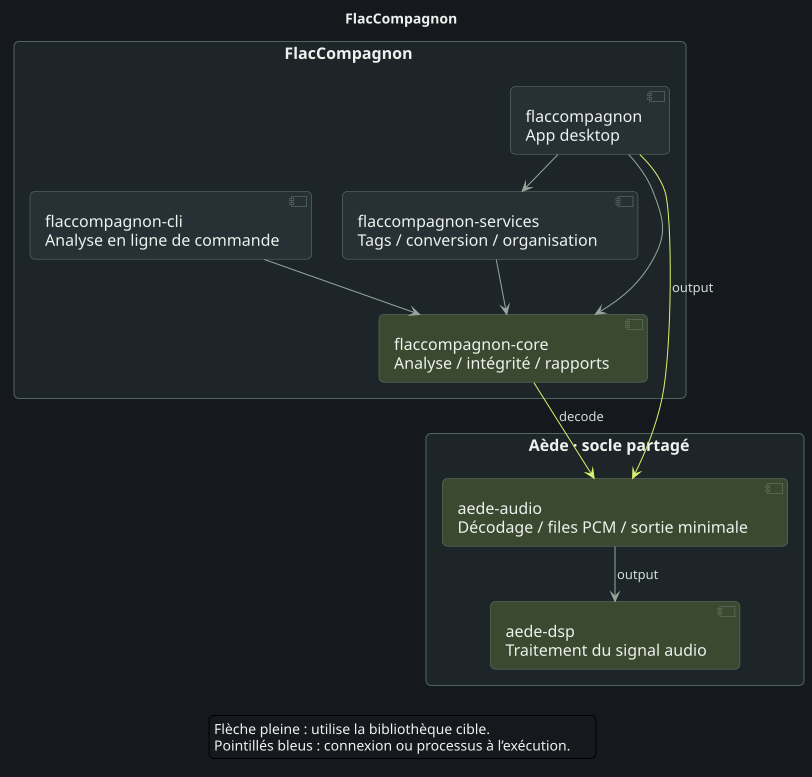

FlacCompagnon analyse la qualité et l’intégrité des fichiers audio. Aède organise le catalogue musical, ses métadonnées et ses accès, et fournit les services de lecture et de serveur. Phémios est l’interface pour explorer cette bibliothèque et écouter sa musique.
Leurs crates Rust partagent deux socles : flaccompagnon-core pour les analyses, et aede-audio / aede-dsp pour les primitives de lecture audio. La vue d’ensemble présente ces réutilisations ; les trois schémas dépliables détaillent ensuite les composants de chaque application.
Vue d’ensemble#


Ouvrir le SVG · PNG · PlantUML

- Les flèches vertes identifient les bibliothèques réutilisées entre projets. Les deux crates du socle audio sont maintenues dans Aède ; le moteur d’analyse est maintenu dans FlacCompagnon.
- Les flèches pleines pointent vers la bibliothèque utilisée. La vue d’ensemble regroupe les rôles des applications, sans énumérer toutes les dépendances Cargo.
- Les flèches bleues pointillées représentent des communications à l’exécution. Phémios dialogue avec Aède en HTTPS/WSS, avec un moteur local embarqué ou un serveur distinct.
Dans chaque application#
FlacCompagnon — analyser et examiner#
flaccompagnon est l’App desktop ; flaccompagnon-cli est l’analyseur en ligne de commande. Ils utilisent flaccompagnon-core, tandis que flaccompagnon-services gère l’édition des tags, les conversions et l’organisation des fichiers.
L’App utilise aede-audio/output pour une lecture locale minimale, sans serveur ni compte Aède, normalisation ou fondu. Son cœur utilise aussi aede-audio/decode pour les fonctions de lecture. L’analyse conserve son propre décodage et ses mesures à la précision d’origine : les traitements de préécoute ne modifient pas ses résultats.
Voir les crates de FlacCompagnon


Ouvrir le SVG · PNG · PlantUML

Aède — catalogue, serveur et lecture#
aede-core gère le catalogue, les crédits et la persistance. Il s’appuie sur aede-accounts pour les règles de compte, aede-moods pour une sélection explicable des ambiances et la bibliothèque d’analyse de FlacCompagnon. aede-server expose l’API et utilise aede-devices pour les lecteurs réseau. aede-cli orchestre les commandes et peut lancer le serveur.
aede-audio fournit le décodage progressif et les files PCM bornées ; aede-dsp porte les algorithmes communs de traitement du signal. La console desktop possède ses propres crates, aede-desktop et aede-desktop-core : elle lance l’exécutable du moteur dans un processus enfant, sans réimplémenter le serveur.


Phémios — explorer et écouter#
phemios est l’enveloppe desktop Tauri. phemios-core gère l’orchestration native et l’intégration de la lecture, avec les primitives communes aede-audio/queue. phemios-cd fournit la lecture locale des CD audio et images CUE ; phemios-transfer gère les transferts vers les périphériques.
La connexion à l’API Aède est distincte de la réutilisation des crates. Pour la lecture de la bibliothèque, Phémios reçoit le PCM traité par Aède et garde ses responsabilités de transport et de sortie côté client ; il ne normalise pas une seconde fois ce flux. La lecture des CD locaux ne nécessite pas de connexion à un compte Aède.


Un socle commun, des fonctionnalités choisies#
aede-audio n’active aucune fonctionnalité par défaut. decode ajoute le décodage progressif ; dsp expose le DSP ; queue ajoute les files PCM bornées ; output combine ces primitives pour un lecteur minimal sur la sortie audio. Chaque application choisit le profil dont elle a besoin. Partager une crate n’active pas toutes les fonctions de lecture d’Aède dans chaque application.
La préparation des builds natifs des clients sélectionne une version stable publiée d’Aède et conserve sa révision exacte. Une commande Cargo directe utilise l’épinglage existant. Les schémas décrivent l’architecture des sources actuelles, sans garantir que des applications construites indépendamment utilisent des versions identiques.
Les schémas couvrent les 18 crates de production des trois dépôts, y compris le workspace desktop indépendant d’Aède. Les dépendances tierces, de build et de développement, ainsi que la crate de test phemios-glib-regression, sont omises. Ils ne certifient pas la compatibilité des appareils physiques.
Pour les limites des fonctionnalités et les règles de mise à jour, consultez le socle audio commun. Poursuivez avec l’App serveur ou l’API native.